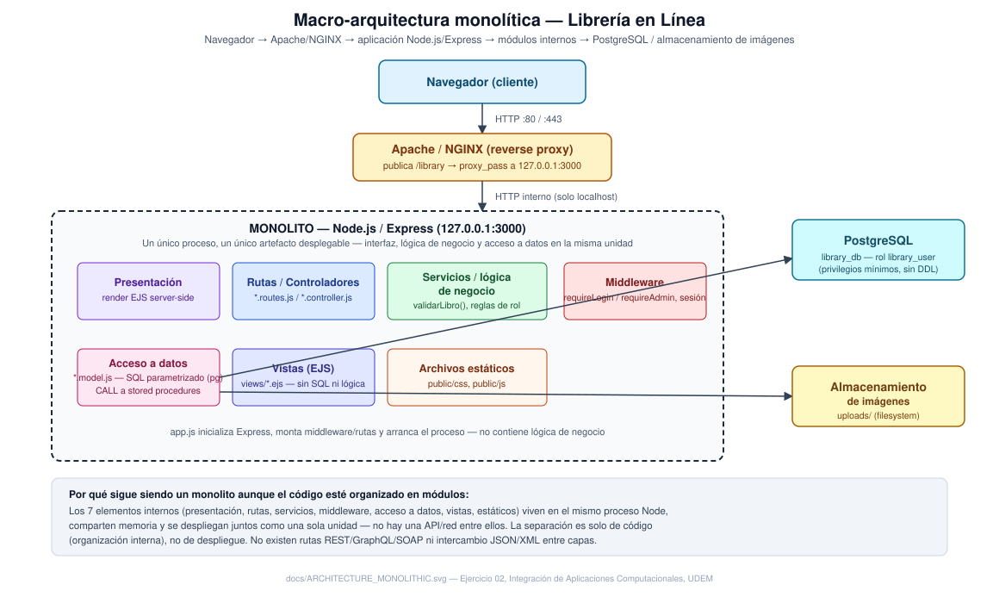
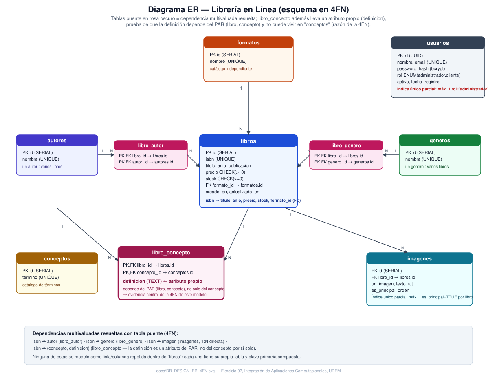

Ejercicio guiado + Trabajo en casa · Ejercicio 02
Qué construye este proyecto y dónde termina su alcance.
Se construyó una aplicación web monolítica para administrar el catálogo de una librería en
línea: gestión de libros con múltiples autores y géneros, conceptos técnicos definidos por libro (con
definición propia por cada par libro-concepto), imágenes con portada, control de stock y precio, y un único
usuario Administrador. Todo el sistema — interfaz, lógica de negocio y acceso a datos — vive en un solo
proceso Node.js/Express, renderizando HTML del lado del servidor con EJS y accediendo a PostgreSQL
directamente vía pg, sin ORM y sin ninguna API intermedia.
El propósito del ejercicio no fue solo "hacer que funcione", sino tomar y justificar decisiones de ingeniería en cada etapa: análisis de requisitos, modelo de datos normalizado hasta 4FN, arquitectura, seguridad, pruebas y despliegue — todo documentado y, en la medida de lo posible, verificado en vivo contra una base de datos y un servidor reales, no solo revisado en el código.
CRUD completo, autenticación y roles, conceptos técnicos por libro, imágenes, seguridad, pruebas, despliegue con reverse proxy.
Pagos, envíos, facturación, roles adicionales a cliente/administrador, multi-idioma.
Sin API REST/GraphQL/SOAP ni JSON/XML entre frontend y backend — formularios HTML clásicos (Post/Redirect/Get).
Documento completo: docs/REQUIREMENTS.md — 15 requisitos funcionales (RF-01 a RF-15) y 8 no funcionales (RNF-01 a RNF-08), cada uno con su estado verificado contra el código real, no una lista copiada del enunciado.
| Actor | Puede hacer | No puede |
|---|---|---|
| Visitante (sin sesión) | Ver /, /login, /registro | Cualquier ruta de catálogo o administración |
| Usuario registrado | Consultar catálogo, ficha de libro, conceptos | Crear/editar/eliminar cualquier cosa; entrar a /admin/* |
| Administrador (máx. 1) | CRUD completo de libros, catálogos, imágenes, conceptos y usuarios | Crear un segundo administrador (bloqueado en la base de datos) |
requireLogin/requireAdmin).env nunca en el repositorio, contraseñas con bcryptON DELETE RESTRICT en las relaciones puenteRegistro completo con esquema necesidad → alternativas → decisión → justificación → riesgo → evidencia: docs/ENGINEERING_DECISIONS.md (19 decisiones documentadas).

Navegador → NGINX (reverse proxy) → Express (7 capas internas) → PostgreSQL / almacenamiento de imágenes
Aunque el código está organizado en 7 capas internas (presentación, rutas/controladores, servicios, middleware, acceso a datos, vistas, estáticos), sigue siendo un monolito: todas comparten el mismo proceso y se despliegan juntas como una sola unidad — no hay red ni API entre ellas.
Análisis comparativo completo (~650 palabras) en docs/TAREA_2C_EVALUACION_ARQUITECTONICA.md. En resumen: con 7 entidades, un solo rol de escritura y un equipo de una persona, un monolito minimiza la variable que más cuesta en un proyecto pequeño — la coordinación entre capas/servicios — sin sacrificar separación de responsabilidades en el código.
10 tablas normalizadas hasta 4FN. Proceso completo de normalización (1FN → 2FN → 3FN/BCNF → 4FN): docs/NORMALIZATION_4FN.xlsx. Esquema ejecutable: sql/01_schema.sql.

Tablas puente en rosa oscuro resuelven las dependencias multivaluadas; libro_concepto lleva además el atributo propio definicion.
La evidencia central de la 4FN: un libro puede tener varios autores, varios géneros, varias imágenes y varios
conceptos definidos — cuatro dependencias multivaluadas independientes entre sí. Ninguna se
modeló como lista dentro de libros; cada una vive en su propia tabla puente con clave primaria
compuesta. libro_concepto es el caso más interesante: la definicion depende del
par (libro, concepto), no solo del concepto — el mismo concepto puede tener definiciones
distintas en libros distintos, verificado con datos reales en el seed.
ux_un_solo_administrador), no solo validado en la aplicaciónux_una_imagen_principal_por_libro)Comandos reales ejecutados, no un plan hipotético: docs/GCP_COMMANDS.md.
| Campo | Valor |
|---|---|
| Instancia | integracion |
| Zona | us-central1-c |
| Tipo de máquina | e2-standard-2 (2 vCPU, 8 GB RAM) |
| Imagen | CentOS Stream 10 |
| PostgreSQL | 18.6, rol de aplicación library_user con privilegio mínimo (sin DDL) |
Al revisar la instancia se encontraron y corrigieron dos brechas reales que no eran visibles solo leyendo el
código: el rol library_user era dueño (OWNER) completo de la base de datos, y el
firewall tenía el puerto 3000 abierto a Internet con reglas duplicadas — ambas corregidas y verificadas
(ver sección Seguridad).
| Carpeta / archivo | Responsabilidad |
|---|---|
app.js | Inicialización de Express, middleware, montaje de rutas |
config/db.js | Pool de conexión a PostgreSQL |
middlewares/ | auth.js (requireLogin/requireAdmin), upload.js (multer) |
modules/ | Un directorio por entidad: auth, usuarios, libros, autores, generos, formatos, conceptos |
modules/catalogo/catalogo.factory.js | Fábrica MVC compartida por los 4 catálogos estructuralmente idénticos |
views/ | Plantillas EJS y partials compartidos — sin SQL ni lógica de negocio |
public/ | CSS y estáticos |
Cada módulo separa *.model.js (SQL parametrizado), *.controller.js (orquestación) y *.routes.js (mapeo URL→controlador) — patrón MVC.
Registro, login, logout, sesión de servidor, contraseña mínima de 8 caracteres con hash bcrypt.
ISBN, título, año, precio, stock, formato — con validación server-side completa.
Múltiples autores y géneros por libro, gestionados vía stored procedures atómicos.
Definiciones propias por libro, incluido el caso obligatorio de Cloud Computing con 10 conceptos.
Carga con validación de extensión/tamaño, portada marcable, nombre generado por el servidor.
CRUD de autores, géneros, formatos, conceptos, y administración de usuarios/roles.
Flujo típico: Navegador → formulario HTML (POST) → ruta Express → middleware de auth → controlador →
validación server-side → modelo (SQL parametrizado o CALL a stored procedure) → PostgreSQL → redirección
(Post/Redirect/Get) → vista EJS renderizada.
Revisión completa de 12 controles: docs/SECURITY_REVIEW.md. Tabla resumida (Tarea 2d, 10 amenazas): docs/TAREA_2D_REVISION_SEGURIDAD.md.
| Amenaza | Mitigación | Estado |
|---|---|---|
| Contraseñas en texto plano | Hash bcrypt (10 rounds), mínimo 8 caracteres | Verificado en vivo |
| SQL Injection | 100% consultas parametrizadas — probado con inyección real | Verificado en vivo |
| Acceso no autorizado a admin | requireAdmin en toda ruta de escritura | Verificado en vivo |
| Catálogo visible sin sesión | requireLogin en rutas de catálogo | Corregido |
| Subida de archivos maliciosos | Whitelist de extensión, límite 5 MB, nombre generado | Riesgo residual: sin validar MIME real |
| Mensajes de error con detalle interno | Middleware de error centralizado, nunca reenvía err.message | Corregido |
library_user con privilegios excesivos | Solo SELECT/INSERT/UPDATE/DELETE, sin DDL | Corregido en GCP real |
| Node expuesto directo a Internet | HOST=127.0.0.1 por defecto + firewall cerrado | Corregido en GCP real |
| Segundo Administrador | Índice único parcial en la base de datos | Verificado en vivo |
| Secretos en el repositorio | .env excluido por .gitignore en todo momento | Verificado |
Matriz completa: docs/TEST_PLAN.md — 36 casos en 10 categorías (mínimo pedido: 15).
casos con evidencia real de ejecución (local + instancia GCP)
verificados por revisión de código, no requieren infraestructura adicional
documenta deliberadamente un riesgo residual no resuelto
duplicate key value violates unique constraint "libros_isbn_key"viola la restricción "check" "libros_stock_check"viola la restricción "check" "libros_precio_check"viola la llave foránea "libros_formato_id_fkey"violates RESTRICT setting of foreign key constraintduplicate key value violates unique constraint "ux_un_solo_administrador"Detalle completo: docs/GCP_COMMANDS.md, sección 5.
Node corre como servicio systemd (docs/web-monolito.service)
escuchando solo en 127.0.0.1:3000. NGINX publica /library
(docs/nginx-libreria.conf) reescribiendo, con proxy_redirect
y sub_filter, tanto las redirecciones como los enlaces del HTML — la aplicación no necesitó
ningún cambio de código para funcionar bajo el prefijo.
| Prueba | Resultado |
|---|---|
GET / | 302 → /library/ |
GET /library/ | 200, enlaces ya con el prefijo |
POST /library/login (login real) | 302 → /library/, cookie de sesión válida |
GET /library/libros con sesión | 200, 32 libros listados |
GET :3000/ directo, desde fuera | Sin respuesta — puerto no expuesto |
evidencias/ ya están creadas siguiendo
docs/EVIDENCE_GUIDE.md; faltan las capturas de pantalla reales
(consola de GCP, terminal, navegador) para reemplazar los recuadros de abajo.
integracion corriendo en Compute Enginelibrary_user sin privilegio DDL, confirmado en la instancia real/library vía NGINXRegistro completo con 19 decisiones formales: docs/ENGINEERING_DECISIONS.md.
VALUES 'a','b' en vez de VALUES ('a'),('b')HOST por defecto 0.0.0.0 en server.js — exponía Node a toda la rednpm audit en la cadena bcrypt → tar — resuelto actualizando a bcrypt 6.0.0CALL de PostgreSQL no acepta subconsultas como argumento directo — corregido con la técnica \gsetCada uno documentado con: necesidad → alternativas → decisión → riesgo → evidencia de validación.
Se usó Claude Code (Anthropic) como asistente de ingeniería a lo largo de todo el ejercicio.
La IA se usó como herramienta de ingeniería, no como sustituto del análisis: cada cambio se verificó (con
node -c, pruebas contra bases de datos reales, o smoke tests HTTP) antes de darse por bueno, y
cada decisión de arquitectura, seguridad o modelo de datos quedó registrada con su razonamiento — no solo el
resultado.
El sistema cumple los requisitos funcionales y no funcionales del ejercicio: CRUD completo sobre un modelo normalizado hasta 4FN, autenticación y autorización por rol, protección contra las amenazas más comunes de una aplicación web (SQL Injection, subida de archivos, exposición de secretos, elevación de privilegios), y un despliegue real y verificado en infraestructura GCP con reverse proxy.
La disciplina de probar antes de dar por bueno resultó determinante: varios bugs reales (ver sección 13) solo aparecieron al ejecutar contra una base de datos y un servidor reales, nunca durante la sola revisión del código — una lección directa sobre los límites de la revisión estática.
Todos los artefactos del ejercicio, sin secretos ni node_modules.